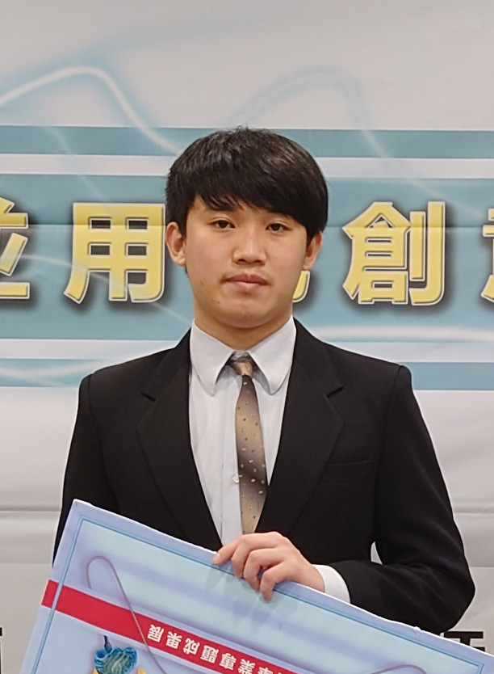

Contact me

- About me
- My hobbies
- Skill
mail: B0644247@cgu.edu.tw
github: HuanyueTW
My name is Brian Chiang, a senior student in Chang Gung University and major in
information management.
There are five people in my family, include my dad, mom,
brother, sister and me. My parents always believe that learning is not limited to books,
and this idea stimulates my curiosity of many things and it promotes me to touch different
fields.
After diverse exploration, literary is my favorite field. No matter it's writing or
reading the book, they are all the things I'm willing to try. Because of participating such
kinds of activities, I can be either active or quiet.
I feel so happy about the life in university, not only I can choose subjects I interested in,
but also there are lots of friends I can have heart to heart talk and play with each other.
Looking forward that I can have my own expertise before graduating from CGU and
finish my graduate school in the National Chengchi University Or Taiwan University of
Science and Technology later! :)